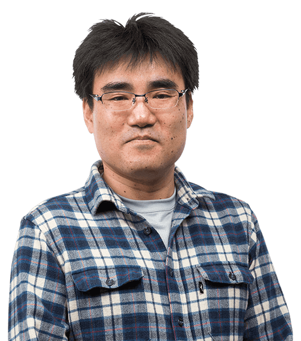

Applied Mathematics and Informatics Course, Faculty of Advanced Science and Technology
複雑で変化の激しい現代の科学技術の世界では、様々な分野が互いに関連しあいながら新しいものが生まれています。数学や情報科学は、分野の枠を越えて物事の本質にせまり、課題を分析し解決するための道具となります。数理・情報科学課程では、物事を論理的に考え適切に表現する力 、課題を数学的・数量的に分析し解決する力、IT社会に柔軟に対応し活躍できる力を備えた人材の育成を目指します。
covered in open lab
助教
人工認知・数理脳科学
教授
発展方程式

准教授
人工知能（機械学習、パターン認識）
教授
自然言語処理（知能情報学）
教授
分散アルゴリズム
准教授
統計力学（物理）・教育工学
※ 課程担当教員17名のうち6名を掲載。全員の紹介は「課程担当教員」ページへ。
入試情報や卒業後の進路については、専用ページで詳しく紹介しています。オープンキャンパスや個別相談も随時受け付けています。
課程の雰囲気や研究室の様子がわかる紹介動画をまとめています。入学後のイメージをつかむのにおすすめです。